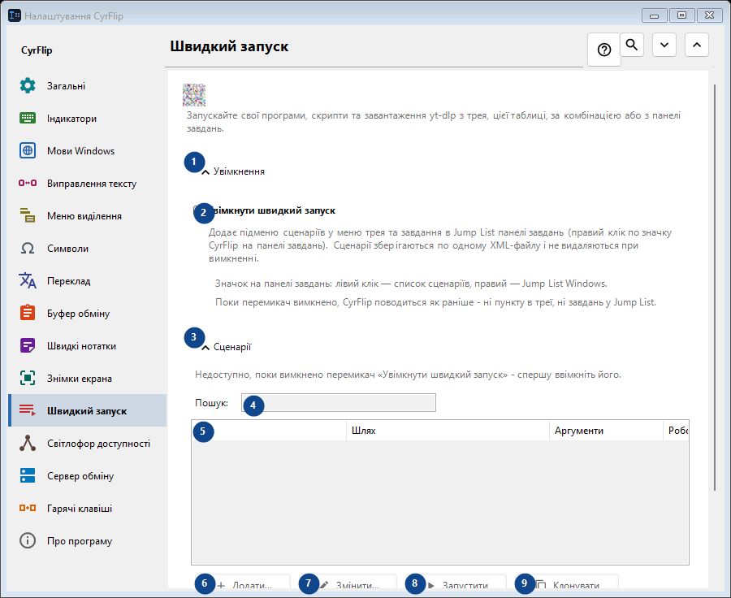
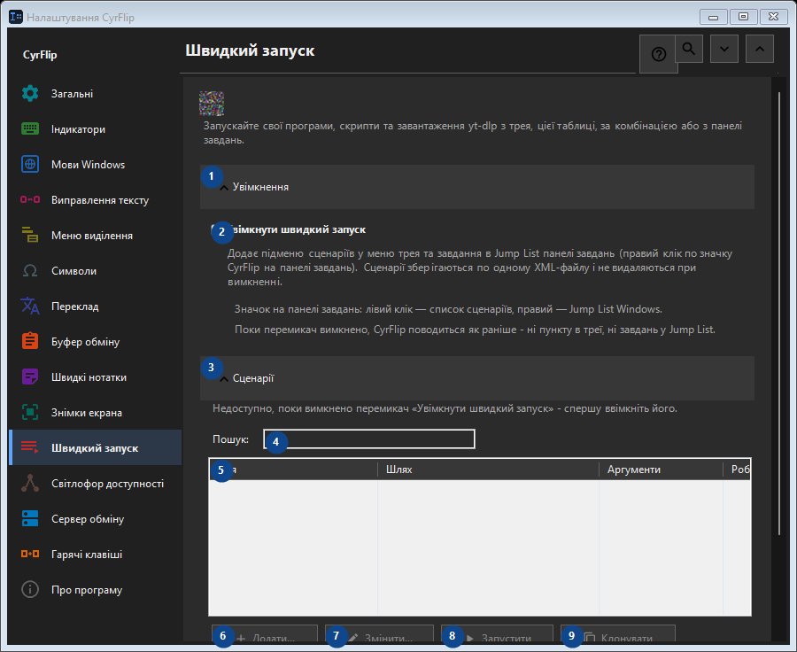

Швидкий запуск
Для чого це вікно
Запускайте свої програми, скрипти та завантаження yt-dlp з трея, цієї таблиці, за комбінацією або з панелі завдань.


Порядок дій
Налаштування застосовуються одразу. Обов’язкового порядку немає; користуйтеся групами нижче.
Елементи
1. Увімкнення
Скористайтеся командою, коли потрібна вказана дія. Прочитайте запит підтвердження перед згодою.
Ваші сполучення клавіш2. Увімкнути швидкий запуск
Додає підменю сценаріїв у меню трея та завдання в Jump List панелі завдань (правий клік по значку CyrFlip на панелі завдань). Сценарії зберігаються по одному XML-файлу і не видаляються при вимкненні.
Ваші сполучення клавіш3. Сценарії
Скористайтеся командою, коли потрібна вказана дія. Прочитайте запит підтвердження перед згодою.
Ваші сполучення клавіш4. Пошук
Недоступно, поки вимкнено перемикач «Увімкнути швидкий запуск» - спершу ввімкніть його. Елемент зараз недоступний. Спочатку ввімкніть функцію або виберіть запис.
Ваші сполучення клавіш5. Швидкий запуск
Недоступно, поки вимкнено перемикач «Увімкнути швидкий запуск» - спершу ввімкніть його. Елемент зараз недоступний. Спочатку ввімкніть функцію або виберіть запис. Ім'я / Шлях / Аргументи / Робоча папка / Адмін / Сполучення
Ваші сполучення клавіш6. Додати...
Недоступно, поки вимкнено перемикач «Увімкнути швидкий запуск» - спершу ввімкніть його. Елемент зараз недоступний. Спочатку ввімкніть функцію або виберіть запис.
Ваші сполучення клавіш7. Змінити...
Недоступно, поки вимкнено перемикач «Увімкнути швидкий запуск» - спершу ввімкніть його. Елемент зараз недоступний. Спочатку ввімкніть функцію або виберіть запис.
Ваші сполучення клавіш8. Запустити
Недоступно, поки вимкнено перемикач «Увімкнути швидкий запуск» - спершу ввімкніть його. Елемент зараз недоступний. Спочатку ввімкніть функцію або виберіть запис.
Ваші сполучення клавіш9. Клонувати
Недоступно, поки вимкнено перемикач «Увімкнути швидкий запуск» - спершу ввімкніть його. Елемент зараз недоступний. Спочатку ввімкніть функцію або виберіть запис.
Ваші сполучення клавіш10. Видалити
Недоступно, поки вимкнено перемикач «Увімкнути швидкий запуск» - спершу ввімкніть його. Елемент зараз недоступний. Спочатку ввімкніть функцію або виберіть запис.
Ваші сполучення клавіш11. Перемістити вгору
Недоступно, поки вимкнено перемикач «Увімкнути швидкий запуск» - спершу ввімкніть його. Елемент зараз недоступний. Спочатку ввімкніть функцію або виберіть запис.
Ваші сполучення клавіш12. Перемістити вниз
Недоступно, поки вимкнено перемикач «Увімкнути швидкий запуск» - спершу ввімкніть його. Елемент зараз недоступний. Спочатку ввімкніть функцію або виберіть запис.
Ваші сполучення клавіш13. Експорт...
Недоступно, поки вимкнено перемикач «Увімкнути швидкий запуск» - спершу ввімкніть його. Елемент зараз недоступний. Спочатку ввімкніть функцію або виберіть запис.
Ваші сполучення клавіш14. Імпорт...
Недоступно, поки вимкнено перемикач «Увімкнути швидкий запуск» - спершу ввімкніть його. Елемент зараз недоступний. Спочатку ввімкніть функцію або виберіть запис.
Ваші сполучення клавіш15. Імпорт з OneClickRunner...
Недоступно, поки вимкнено перемикач «Увімкнути швидкий запуск» - спершу ввімкніть його. Елемент зараз недоступний. Спочатку ввімкніть функцію або виберіть запис.
Ваші сполучення клавіш